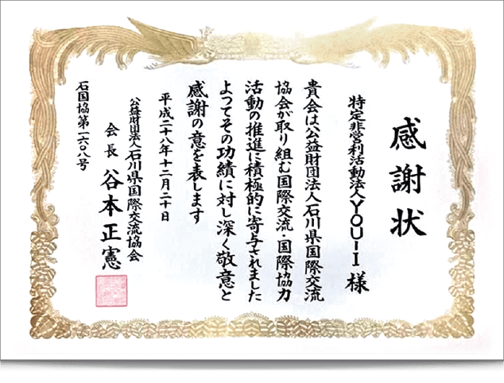
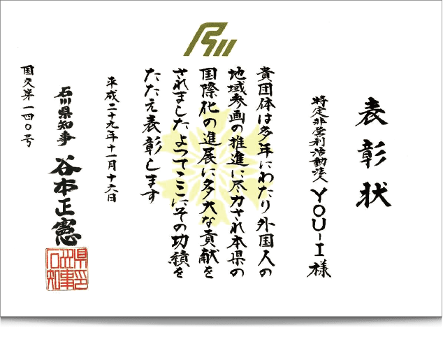
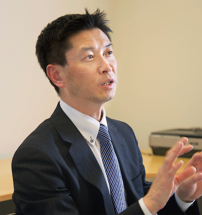

海外人財支援サービス
ユーアイについて
お問い合わせ
人をつなぐ、世界をつなぐ。
YOU-I（ユーアイ）は2006年に石川県内の活動を中心とした国際交流グループとして設立し、2008年に法人化された組織です。 設立のきっかけは、県内に住む言語能力の高い人々を地域の財産と考え、外国人の地域参画と地域の国際化に役立てる取組みが主な目的です。
石川県国際交流功労者表彰受賞をはじめ、
受賞・表彰、翻訳や通訳の実績多数

公益財団法人
石川県国際交流協会様より
（2016年12月）
Awarded by the Ishikawa Foundation
for International Exchange
(Dec 2016)

石川県知事
谷本正憲様より
（2017年11月）
Awarded by the Ishikawa Prefectural
Governor, Masanori Tanimoto
(Nov 2017)

株式会社YOU-I
代表取締役社長：山田 和夫
YOU-I（ユーアイ）は2006年に石川県内の活動を中心とした国際交流グループとして設立し、2008年に法人化された組織です。 設立のきっかけは、県内に住む言語能力の高い人々を地域の財産と考え、外国人の地域参画と地域の国際化に役立てる取組みが主な目的です。 「在住外国人の視点で」を大切にして、国際交流事業等を行っています。 当団体の大きな特徴は「特定非営利活動」だけでなく、自立運営を目指しており、「翻訳」を中心とした収益事業を行っています。 それに伴い、「各自治体との協働事業」 「企業とのパートナーシップ」 「他のＮＰＯ法人との連携」にこだわっています。
ユーアイの財産
YOU-I（ユーアイ）には様々な個性をもった仲間がいます。多様な国籍、言語、文化を背景に持った魅力的なユーアイメンバーをご紹介します。
YOU-Iメンバーについて詳しく知る
海外人財支援サービスに関する
お問い合わせはこちら
お問い合わせ(無料)
お気軽にどうぞ
facebook
instagram